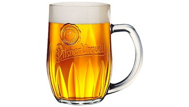

Co je to pivo?
Pivo (mezi matfyzáky známé jako Chmelový čaj) je je kvašený alkoholický nápoj. Jedná se o nejrozšířenější alkoholický nápoj a třetí nejoblíbenější nápoj po vodě a čaji.
Výroba
Pivo se vyrábí vařením a kvašením škrobů z obilných zrn - nejčastěji ze sladového ječmene, používá se však také pšenice, kukuřice, rýže a oves. Kvašením škrobových cukrů v mladině vzniká etanol a nasycení oxidem uhličitým (karbonizace).
Ingredience piva
- Voda
- Slad
- Ječmen
- Pšenice
- Kukuřice
- Rýže
- Oves
- Chmel
- Kvasnice